결과물 영상을 먼저 보여드리겠습니다
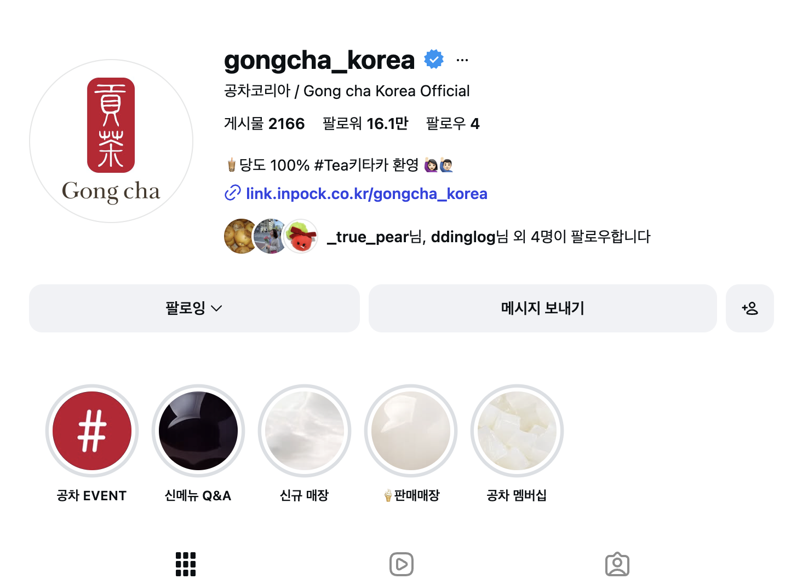
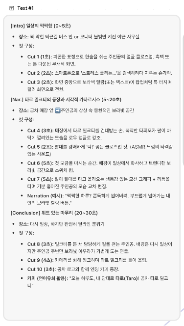
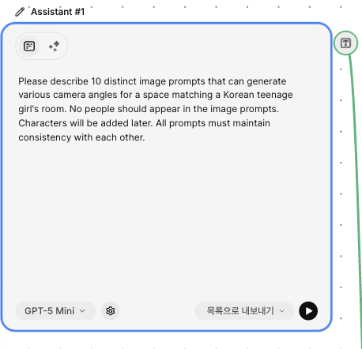
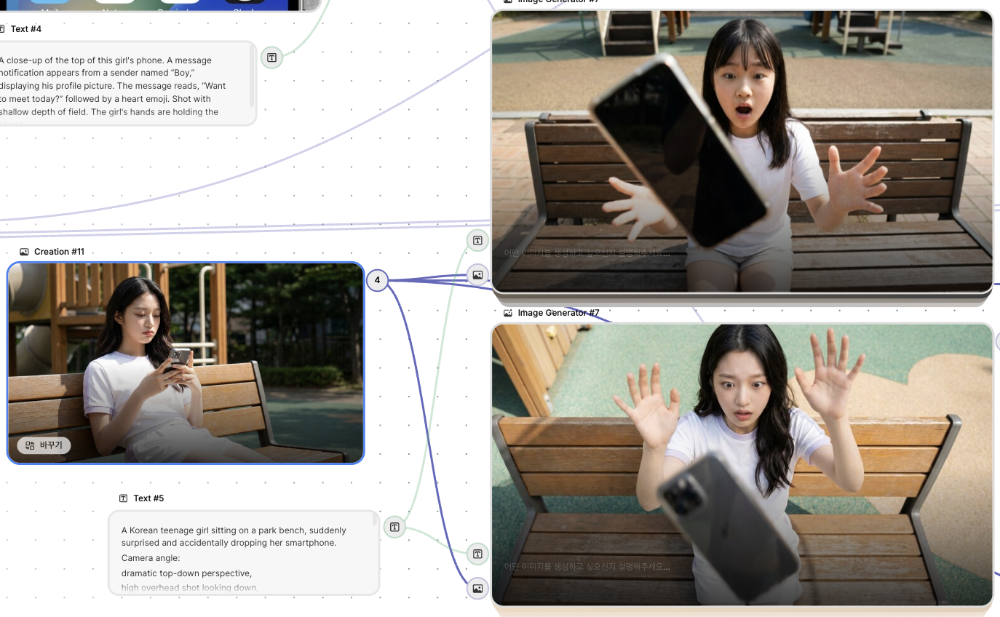
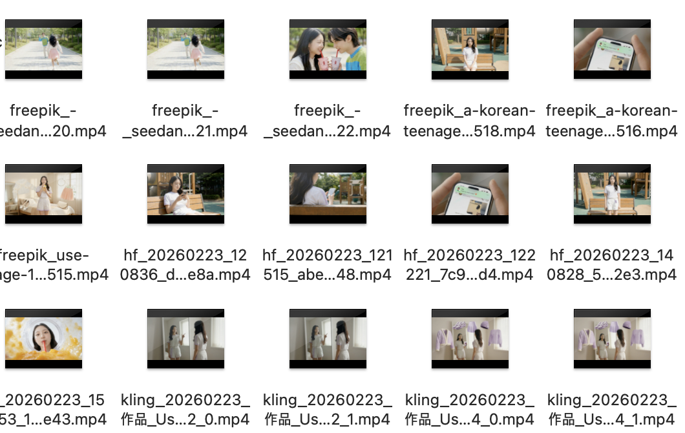
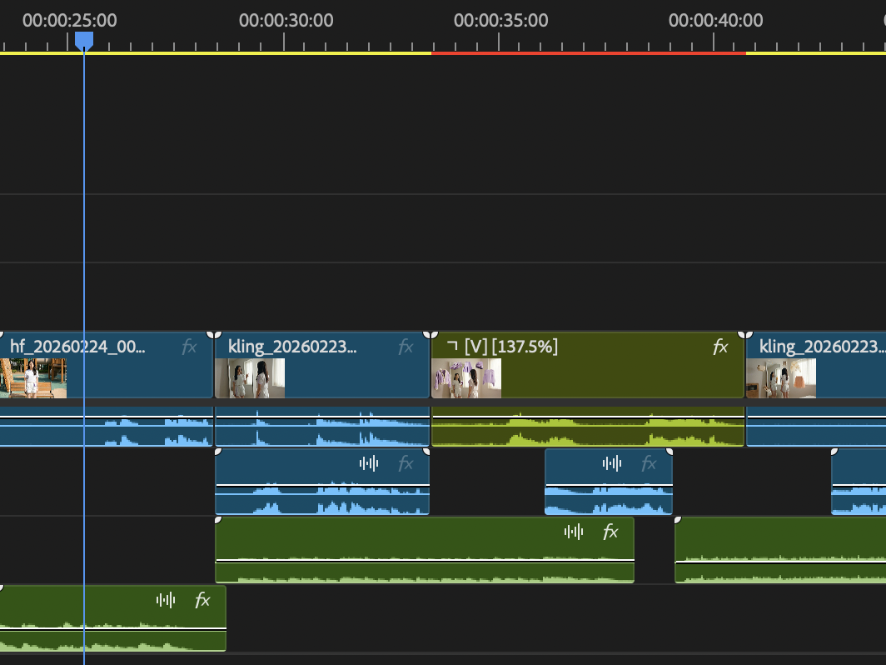
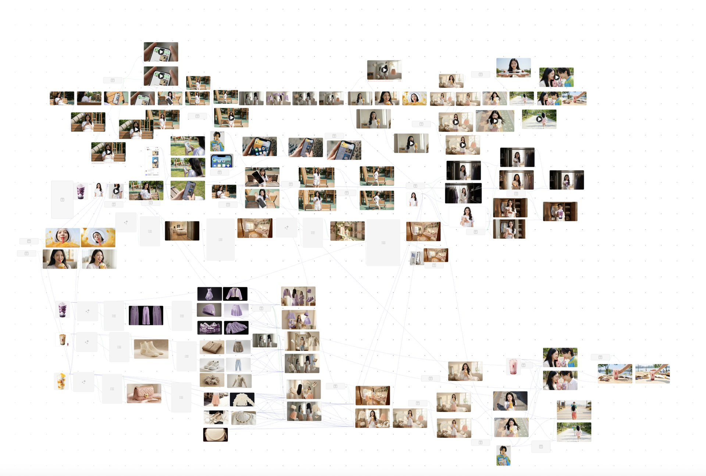
AI로 생성하다 보면 장면마다 주인공 얼굴이 바뀌는 문제 발생
기준 모델 이미지를 먼저 제작하고, 모든 후속 생성의 앵커(Anchor)로 연결
장면 간 오차율 최소화 → 동일 인물처럼 자연스러운 연결
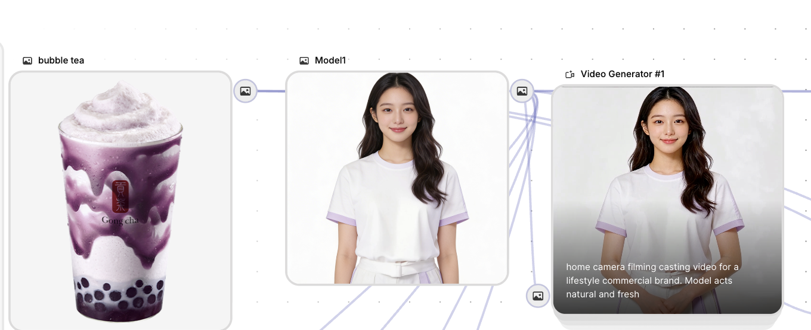
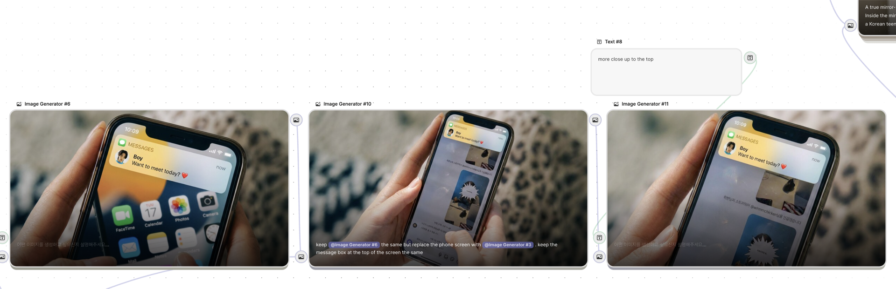
1번 이미지의 배경화면과 액팅에 2번 이미지의 메신저 화면만 사용하고 싶다면,
프리픽에서는 이미지를 연결하고 태그를 지어 원하는 이미지를 재생성할 수 있음
List 기능으로 대량 이미지 뽑기
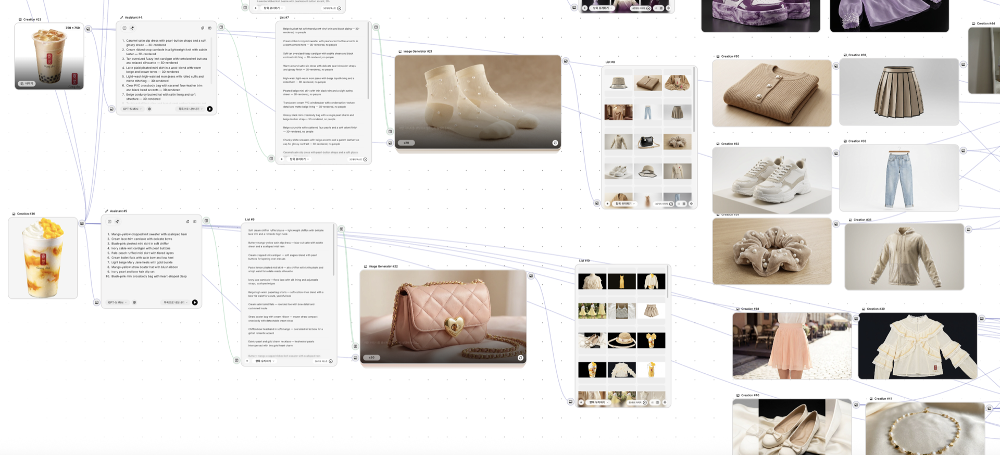
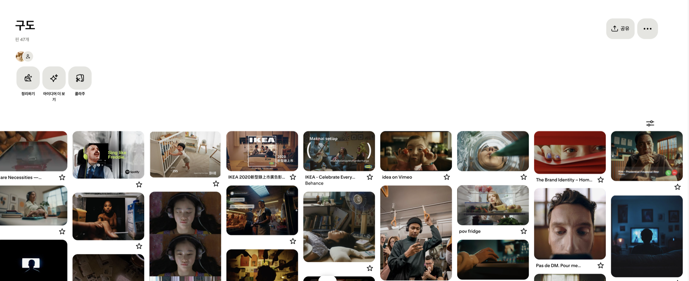
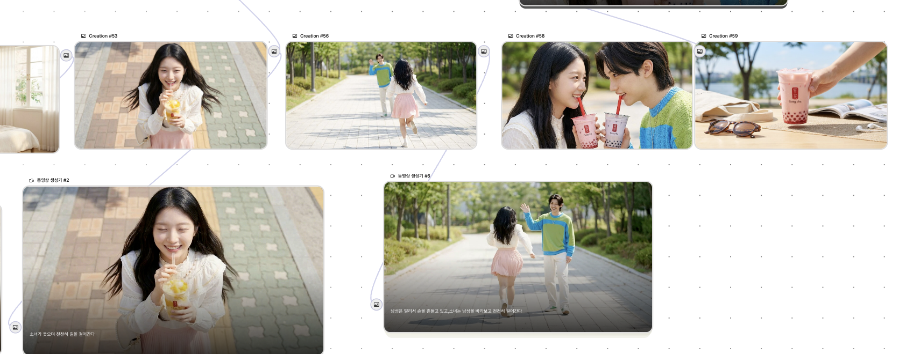
전체 워크플로우 — 모두 Freepik 안에서